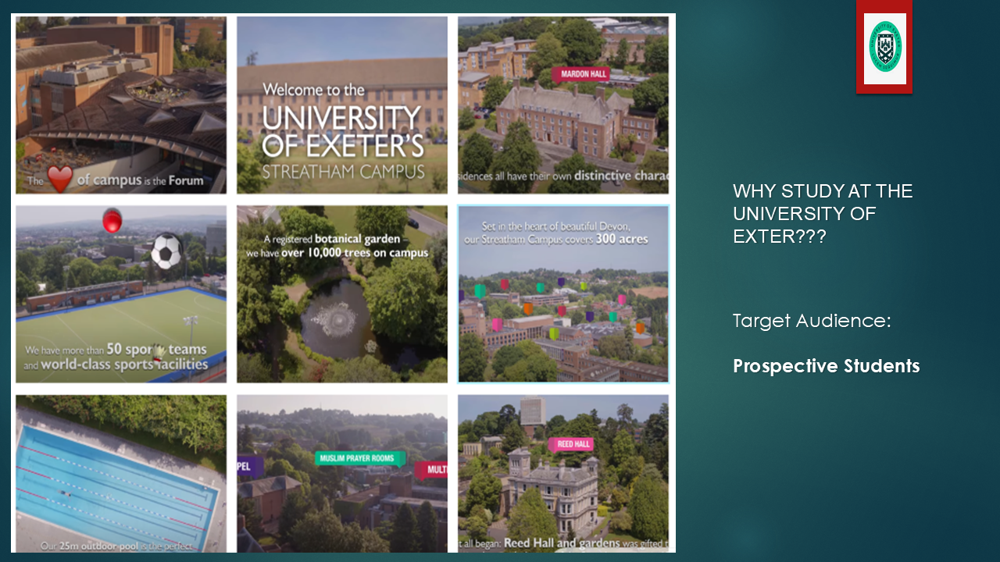

Hello
I am minlin huang, a passionate digital marketer who writes engaging content and communicates well. The ever-changing world of digital marketing has always fascinated me, so I studied it to understand its far-reaching implications on organizations and customers. Growing up in City of Penryn, I am always captivated by the power of storytelling ad ability to communicate with audience at global level. My journey of digital marketing started with social media where I have created my page and also post regularly to increase my followers. I regularly update my videos and photos on Instagram and Facebook.
My interest in the current world's integrated digital environment led me to study digital marketing. For this, I have participated in online classes, workshops, and practical projects and I consider that SEO, social media and content development are core areas of digital marketing. I started this journey to learn how digital marketing for improving my corporate exposure. My curiosity has allowed me to work on many projects that have tested my content development and audience interaction talents. Due to my knowledge, I can safely create approaches that reach certain populations and yield quantifiable results.
This personal webpage will showcase my skills, passion, and dedication to digital marketing. Please browse my work to understand how I can help your firm flourish in digital marketing if you are an employer looking for proof of my talents or history.
My Portfolio
During my academic journey, I have gained a chance to make panorama of University of Exter.
- Panorama design 
- I also made a ppt on why University of Exter is the best university to study?
My Skills
Increasing engagement and likes
I love to remain relevant on social media and I post my photos, reels and videos on social media for increasing likes. Through this, I increase my follower base and also able to communicate with my peers.
Designing
I also learnt to design and make presentation where I use graphics and visuals for creating an engaging content. Thus, I am able to design and creating engaging content which is important for digital marketing.
Content writing
I also learnt to use generative AI tools for writing content where I wrote about “why study digital marketing”. This helped me in understanding how to use AI for generating content which is relevant and engaging.
Contact me
+44 680066963
mh866@exeter.ac.uk
minlin huang